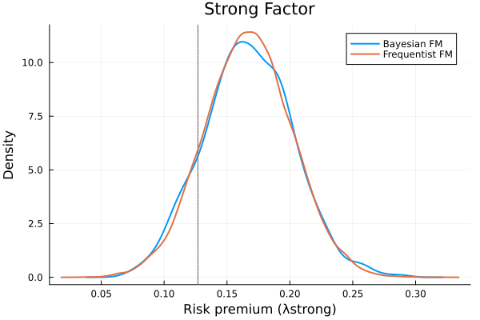
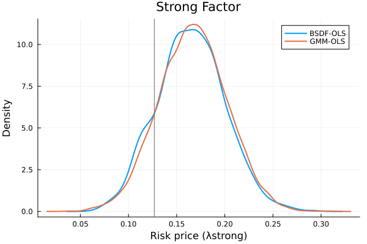
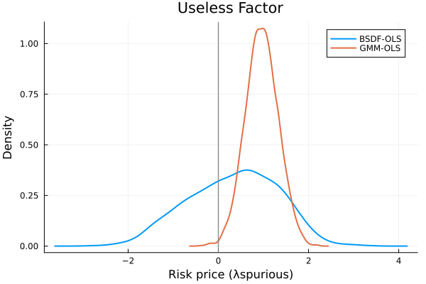

Examples (from R Documentation)
Set Up
Load Required Packages
using BayesianFactorZoo
using RCall # to get the orignal example data
using DataFrames
using StatsPlots # Plotting
using Distributions
using Statistics
using StatsBaseLoad Data From the R Package
R"""
library(BayesianFactorZoo)
data("BFactor_zoo_example")
HML = BFactor_zoo_example$"HML"
lambda_ols = BFactor_zoo_example$"lambda_ols"
R2_ols_true = BFactor_zoo_example$"R2.ols.true"
sim_f = BFactor_zoo_example$"sim_f"
sim_R = BFactor_zoo_example$"sim_R"
uf = BFactor_zoo_example$"uf"
W_ols = BFactor_zoo_example$"W_ols"
""";
# Extract all components
# Get the data from R
@rget HML lambda_ols R2_ols_true sim_f sim_R uf W_ols;Example Bayesian Fama-MacBeth
Case 1: Strong factor
Frequentist Fama-MacBeth
results_fm = TwoPassRegression(sim_f, sim_R)Console Output:
Two-Pass Regression Results:
--------------------------------
Model Information:
Number of factors: 1
Number of assets: 25
Time periods: 1000
OLS Risk Premia Estimates:
λ_0: 0.1672 (SE: 0.0293, t: 5.71)
λ_1: 0.1666 (SE: 0.0346, t: 4.82)
GLS Risk Premia Estimates:
λ_0: 0.1238 (SE: 0.0267, t: 4.64)
λ_1: 0.1693 (SE: 0.0322, t: 5.25)
Model Fit:
Adjusted R² (OLS): 0.5804
Adjusted R² (GLS): 0.8377
Bayesian Fama-MacBeth
results_bfm = BayesianFM(sim_f, sim_R, 2000)Console Ouput:
Bayesian Fama-MacBeth Results:
--------------------------------
Model Information:
Number of factors: 1
Number of assets: 25
Time periods: 1000
MCMC iterations: 2000
Risk Premia Estimates (OLS):
λ_0: 0.1666 (±0.0294)
λ_1: 0.1657 (±0.0353)
Model Fit:
Mean R² (OLS): 0.5298
Mean R² (GLS): 0.8108Extract results for plotting
k = 2; # lambda of the strong factor
m1 = results_fm.lambda[k];
sd1 = sqrt(results_fm.cov_lambda[k,k]);Get posterior draws
bfm = results_bfm.lambda_ols_path[1001:2000,k];Generate frequentist draws
rng = MersenneTwister(123); # for reproducibility
fm = rand(rng, Normal(m1, sd1), 20000);Create plotting DataFrame
df = DataFrame(
Value = vcat(fm, bfm),
Method = vcat(fill("Frequentist FM", 20000), fill("Bayesian FM", 1000))
)Console Output:
21000×2 DataFrame
Row │ Value Method
│ Float64 String
───────┼──────────────────────────
1 │ 0.207803 Frequentist FM
2 │ 0.237487 Frequentist FM
3 │ 0.206156 Frequentist FM
4 │ 0.182515 Frequentist FM
5 │ 0.152894 Frequentist FM
6 │ 0.14362 Frequentist FM
⋮ │ ⋮ ⋮
20996 │ 0.19532 Bayesian FM
20997 │ 0.130483 Bayesian FM
20998 │ 0.174461 Bayesian FM
20999 │ 0.226412 Bayesian FM
21000 │ 0.123783 Bayesian FM
20989 rows omittedCreate density plot
p1 = @df df density(:Value, group=:Method,
linewidth=2,
xlabel="Risk premium (λstrong)",
ylabel="Density",
title="Strong Factor"
)
vline!([lambda_ols[2]], linestyle=:dot, linewidth=1.5, color=:grey, label="")
Case 2: Useless factor
Repeat the process with useless factor (uf)
results_fm_uf = TwoPassRegression(uf, sim_R)Console Output:
Two-Pass Regression Results:
--------------------------------
Model Information:
Number of factors: 1
Number of assets: 25
Time periods: 1000
OLS Risk Premia Estimates:
λ_0: 0.1599 (SE: 0.0401, t: 3.99)
λ_1: 0.9540 (SE: 0.3578, t: 2.67)
GLS Risk Premia Estimates:
λ_0: 0.1057 (SE: 0.0362, t: 2.93)
λ_1: -0.4335 (SE: 0.2760, t: -1.57)
Model Fit:
Adjusted R² (OLS): -0.0075
Adjusted R² (GLS): -0.0125
results_bfm_uf = BayesianFM(uf, sim_R, 2000)Console Output:
Bayesian Fama-MacBeth Results:
--------------------------------
Model Information:
Number of factors: 1
Number of assets: 25
Time periods: 1000
MCMC iterations: 2000
Risk Premia Estimates (OLS):
λ_0: 0.1510 (±0.0417)
λ_1: 0.3079 (±0.9905)
Model Fit:
Mean R² (OLS): 0.0842
Mean R² (GLS): 0.0013m1_uf = results_fm_uf.lambda[k]
sd1_uf = sqrt(results_fm_uf.cov_lambda[k,k])
bfm_uf = results_bfm_uf.lambda_ols_path[1001:2000,k]
fm_uf = rand(rng, Normal(m1_uf, sd1_uf), 20000)
df_uf = DataFrame(
Value = vcat(fm_uf, bfm_uf),
Method = vcat(fill("Frequentist FM", 20000), fill("Bayesian FM", 1000))
)Console Output:
21000×2 DataFrame
Row │ Value Method
│ Float64 String
───────┼───────────────────────────
1 │ 0.961224 Frequentist FM
2 │ 1.10149 Frequentist FM
3 │ 1.43786 Frequentist FM
4 │ 1.35079 Frequentist FM
5 │ 1.56759 Frequentist FM
6 │ 1.21512 Frequentist FM
⋮ │ ⋮ ⋮
20996 │ -1.26963 Bayesian FM
20997 │ 0.669039 Bayesian FM
20998 │ -0.802147 Bayesian FM
20999 │ 2.36535 Bayesian FM
21000 │ -0.601039 Bayesian FM
20989 rows omittedp2 = @df df_uf density(:Value, group=:Method,
linewidth=2,
xlabel="Risk premium (λspurious)",
ylabel="Density",
title="Useless Factor"
)
vline!([lambda_ols[2]], linestyle=:dot, linewidth=1.5, color=:grey, label="")
Display plots side by side
plot(p1, p2, layout=(1,2), size=(1200,400),bottom_margin=5Plots.mm)Example Bayesian estimates of risk prices and R2 (Bayesian SDF)
- Cross-section: Fama-French 25 size and value portfolios
- True pricing factor in simulations: HML
- Pseudo-true cross-sectional R-squared: 0.43
- Pseudo-true (monthly) risk price: 0.127
Case 1: Strong factor
GMM estimation
sim_result = SDF_gmm(sim_R, sim_f, W_ols)Console Output:
SDF GMM Results:
--------------------------------
Model Information:
Number of factors: 1
Number of assets: 25
Time periods: 1000
Risk Price Estimates:
λ_0: 0.1672
λ_1: 0.1666
Model Fit:
Adjusted R²: 0.5804Bayesian estimation
two_step = BayesianSDF(sim_f, sim_R, 2000; psi0=5.0, d=0.5)Console Output:
Bayesian SDF Results:
--------------------------------
Model Information:
Number of factors: 1
Number of assets: 25
Time periods: 1000
MCMC iterations: 2000
Prior type: Flat
Estimation type: OLS
Risk Price Estimates:
λ_0: 0.1644 (±0.0291)
λ_1: 0.1634 (±0.0353)
Model Fit:
Mean R²: 0.5287 (±0.1228)Extract results for plotting
k = 2 # lambda of the strong factor
m1 = sim_result.lambda_gmm[k]
sd1 = sqrt(sim_result.Avar_hat[k,k])
# Get posterior draws
bfm = two_step.lambda_path[1001:2000, k]
# Generate GMM draws
rng = MersenneTwister(123) # for reproducibility
fm = rand(rng, Normal(m1, sd1), 5000)
# Create plotting DataFrame for strong factor
df_strong = DataFrame(
Value = vcat(fm, bfm),
Method = vcat(fill("GMM-OLS", 5000), fill("BSDF-OLS", 1000))
)Console Output:
6000×2 DataFrame
Row │ Value Method
│ Float64 String
──────┼────────────────────
1 │ 0.208319 GMM-OLS
2 │ 0.238374 GMM-OLS
3 │ 0.20665 GMM-OLS
4 │ 0.182714 GMM-OLS
5 │ 0.152722 GMM-OLS
6 │ 0.143332 GMM-OLS
⋮ │ ⋮ ⋮
5996 │ 0.192677 BSDF-OLS
5997 │ 0.118785 BSDF-OLS
5998 │ 0.173055 BSDF-OLS
5999 │ 0.218479 BSDF-OLS
6000 │ 0.125678 BSDF-OLS
5989 rows omittedCreate density plot for strong factor
p1 = @df df_strong density(:Value, group=:Method,
linewidth=2,
xlabel="Risk price (λstrong)",
ylabel="Density",
title="Strong Factor",
adjust=1
)
vline!([lambda_ols[2]], linestyle=:dot, linewidth=1.5, color=:grey, label="")
Case 2: Useless factor
GMM estimation
sim_result_uf = SDF_gmm(sim_R, uf, W_ols)Console Output:
SDF GMM Results:
--------------------------------
Model Information:
Number of factors: 1
Number of assets: 25
Time periods: 1000
Risk Price Estimates:
λ_0: 0.1599
λ_1: 0.9540
Model Fit:
Adjusted R²: -0.0075Bayesian estimation
two_step_uf = BayesianSDF(uf, sim_R, 2000; psi0=5.0, d=0.5)Console Output:
Bayesian SDF Results:
--------------------------------
Model Information:
Number of factors: 1
Number of assets: 25
Time periods: 1000
MCMC iterations: 2000
Prior type: Flat
Estimation type: OLS
Risk Price Estimates:
λ_0: 0.1490 (±0.0413)
λ_1: 0.3065 (±0.9778)
Model Fit:
Mean R²: 0.0837 (±0.1400)Extract results
m1_uf = sim_result_uf.lambda_gmm[k]
sd1_uf = sqrt(sim_result_uf.Avar_hat[k,k])
bfm_uf = two_step_uf.lambda_path[1001:2000, k]
fm_uf = rand(rng, Normal(m1_uf, sd1_uf), 5000)
# Create plotting DataFrame for useless factor
df_useless = DataFrame(
Value = vcat(fm_uf, bfm_uf),
Method = vcat(fill("GMM-OLS", 5000), fill("BSDF-OLS", 1000))
)Console Output:
6000×2 DataFrame
Row │ Value Method
│ Float64 String
──────┼─────────────────────
1 │ 0.564754 GMM-OLS
2 │ 1.16776 GMM-OLS
3 │ 1.38975 GMM-OLS
4 │ 0.842655 GMM-OLS
5 │ 0.901772 GMM-OLS
6 │ 0.800888 GMM-OLS
⋮ │ ⋮ ⋮
5996 │ -1.22358 BSDF-OLS
5997 │ 0.646415 BSDF-OLS
5998 │ -0.808775 BSDF-OLS
5999 │ 2.24012 BSDF-OLS
6000 │ -0.642434 BSDF-OLS
5989 rows omittedCreate density plot for useless factor
p2 = @df df_useless density(:Value, group=:Method,
linewidth=2,
xlabel="Risk price (λspurious)",
ylabel="Density",
title="Useless Factor",
adjust=2 # Note different adjustment for useless factor plot
)
vline!([0.0], linestyle=:dot, linewidth=1.5, color=:grey, label="")
Display plots side by side
plot(p1, p2, layout=(1,2), size=(1200,500),bottom_margin=5Plots.mm)Example Continuous SS SDF
Combine factors sim_f and uf
combined_factors = hcat(sim_f, uf);Calculate prior SR to get psi
psi_hat = psi_to_priorSR(sim_R, combined_factors; priorSR=0.1);Run continuous spike-and-slab SDF estimation
shrinkage = continuous_ss_sdf(combined_factors, sim_R, 5000;
psi0=psi_hat,
r=0.001,
aw=1.0,
bw=1.0)Console Output:
Continuous Spike-and-Slab SDF Results:
--------------------------------
Model Information:
Number of factors: 2
Number of assets: 25
Time periods: 1000
MCMC iterations: 5000
Factor Inclusion Probabilities:
Factor 1: 0.9348
Factor 2: 0.5026
Risk Price Estimates:
λ_0: 0.1586 (±0.0303)
λ_1: 0.1024 (±0.0451)
λ_2: -0.0000 (±0.0016)Null hypothesis: lambda = 0 for each factor Posterior probabilities of rejecting the above null hypotheses are: [0.9348 0.5026]
Get SDF paths
shrinkage.sdf_pathGet BMA-SDF
shrinkage.bma_sdfExample Continuous SS SDF v2 (tradable factors)
Example 1: Using first test asset
Combine factors and first test asset for psi calculation
combined_factors_1 = hcat(sim_f, uf, sim_R[:,1]);Calculate psi_hat
psi_hat = psi_to_priorSR(sim_R, combined_factors_1; priorSR=0.1);Prepare inputs for continuoussssdf_v2
f1 = hcat(sim_f, uf); # non-tradable factors
f2 = sim_R[:,1:1]; # tradable factor (first test asset)
R_reduced = sim_R[:,2:end]; # remaining test assetsRun continuous spike-and-slab SDF v2
shrinkage = continuous_ss_sdf_v2(f1, f2, R_reduced, 1000;
psi0=psi_hat,
r=0.001,
aw=1.0,
bw=1.0)Console Output:
Continuous Spike-and-Slab SDF Results:
--------------------------------
Model Information:
Number of factors: 3
Number of assets: 25
Time periods: 1000
MCMC iterations: 1000
Factor Inclusion Probabilities:
Factor 1: 0.9240
Factor 2: 0.3820
Factor 3: 0.6680
Risk Price Estimates:
λ_0: 0.1643 (±0.0344)
λ_1: 0.0881 (±0.0423)
λ_2: 0.0000 (±0.0013)
λ_3: -0.0077 (±0.0241)Null hypothesis: lambda = 0 for each of these three factors Posterior probabilities of rejecting the above null hypotheses are: [0.924 0.382 0.668]
Calculate model-implied Sharpe ratios
sr_quantiles = quantile(std(shrinkage.sdf_path, dims=2), [0.05, 0.5, 0.95])
println("The 5th, 50th, and 95th quantiles of model-implied Sharpe ratios: ", round.(sr_quantiles,digits=4))Console Output:
The 5th, 50th, and 95th quantiles of model-implied Sharpe ratios: [0.0267, 0.1092, 0.1723]Calculate posterior distribution of model dimensions
model_dims = sum(shrinkage.gamma_path, dims=2)
dim_counts = counts(Int.(vec(model_dims)), 0:3) # count occurrences of 0,1,2,3
dim_props = dim_counts / sum(dim_counts)
println("The posterior distribution of model dimensions (= 0, 1, 2, 3): ", dim_props)Console Output:
The posterior distribution of model dimensions (= 0, 1, 2, 3): [0.015, 0.214, 0.553, 0.218]Optional: Visualize results
Plot posterior distribution of model dimensions
p1 = bar(0:3, dim_props,
xlabel="Model Dimension",
ylabel="Probability",
title="Posterior Distribution of Model Dimensions",
label="")
Plot SDF paths
p2 = plot(1:size(shrinkage.sdf_path,2), shrinkage.bma_sdf,
label="BMA-SDF",
linewidth=2,
color=:black,
title="SDF Paths and BMA-SDF");
Add sample paths
function add_sample_paths!(p, shrinkage, n)
for i in 1:min(n, size(shrinkage.sdf_path,1))
plot!(p, 1:size(shrinkage.sdf_path,2), shrinkage.sdf_path[i,:],
alpha=0.1,
color=:blue,
label="")
end
end
add_sample_paths!(p2,shrinkage,50)
plot(p1, p2, layout=(1,2), size=(1200,400))Example Bayesian p-value (diracsssdf_pvalue)
Choose psi based on prior Sharpe ratio
round4(x) = round(x,digits=4);
println("If psi = 1, prior Sharpe ratio is ",
psi_to_priorSR(sim_R, sim_f; psi0=1.0) |> round4)
println("If psi = 2, prior Sharpe ratio is ",
psi_to_priorSR(sim_R, sim_f; psi0=2.0) |> round4)
println("If psi = 5, prior Sharpe ratio is ",
psi_to_priorSR(sim_R, sim_f; psi0=5.0) |> round4)Console Output:
If psi = 1, prior Sharpe ratio is 0.0724
If psi = 2, prior Sharpe ratio is 0.1014
If psi = 5, prior Sharpe ratio is 0.1559Test whether factors' risk prices equal lambda_ols[2]*std(HML)
lambda0 = reshape([lambda_ols[2] * std(HML)], :, 1);
shrinkage = dirac_ss_sdf_pvalue(sim_f, sim_R, 1000, vec(lambda0))Console Output:
Dirac Spike-and-Slab SDF Results:
--------------------------------
Model Information:
Number of factors: 1
Number of assets: 25
Time periods: 1000
MCMC iterations: 1000
Factor Inclusion Probabilities:
Factor 1: 0.0150
Risk Price Estimates:
λ_0: 0.1603 (±0.0293)
λ_1: 0.1256 (±0.0106)Null hypothesis: lambda = 0.1269 Posterior probability of rejecting the above null hypothesis is: 0.015
Test whether the risk price of factor 'sim_f' is equal to 0
shrinkage = dirac_ss_sdf_pvalue(sim_f, sim_R, 1000, [0.0]; psi0=1.0)Console Output:
Dirac Spike-and-Slab SDF Results:
--------------------------------
Model Information:
Number of factors: 1
Number of assets: 25
Time periods: 1000
MCMC iterations: 1000
Factor Inclusion Probabilities:
Factor 1: 0.9510
Risk Price Estimates:
λ_0: 0.1557 (±0.0295)
λ_1: 0.0787 (±0.0345)Null hypothesis: lambda = 0 Posterior probability of rejecting the above null hypothesis is: 0.951
Test multiple factors
Combine strong and useless factors
two_f = hcat(sim_f, uf);Test both factors' risk prices equal to zero
lambda0_null_vec = zeros(2); # 2x1 vector
shrinkage = dirac_ss_sdf_pvalue(two_f, sim_R, 1000, lambda0_null_vec; psi0=1.0)Console Output:
Dirac Spike-and-Slab SDF Results:
--------------------------------
Model Information:
Number of factors: 2
Number of assets: 25
Time periods: 1000
MCMC iterations: 1000
Factor Inclusion Probabilities:
Factor 1: 0.9640
Factor 2: 0.5040
Risk Price Estimates:
λ_0: 0.1577 (±0.0302)
λ_1: 0.0796 (±0.0338)
λ_2: -0.0000 (±0.0010)Null hypothesis: lambda = 0 for each factor Posterior probabilities of rejecting the above null hypothesis are 0.964 and 0.504
Print posterior model probabilities
println("\nPosterior model probabilities are:")
display(shrinkage.model_probs)Console Output:
Posterior model probabilities are:
4×3 Matrix{Float64}:
0.0 0.0 0.019
1.0 0.0 0.477
0.0 1.0 0.017
1.0 1.0 0.487Test with maximum number of factors restriction
shrinkage = dirac_ss_sdf_pvalue(two_f, sim_R, 1000, lambda0_null_vec;
psi0=1.0, max_k=1)Console Output:
Dirac Spike-and-Slab SDF Results:
--------------------------------
Model Information:
Number of factors: 2
Number of assets: 25
Time periods: 1000
MCMC iterations: 1000
Factor Inclusion Probabilities:
Factor 1: 0.9290
Factor 2: 0.0340
Risk Price Estimates:
λ_0: 0.1574 (±0.0302)
λ_1: 0.0773 (±0.0360)
λ_2: 0.0000 (±0.0003)println("\nPosterior model probabilities with max_k=1 are:")
display(shrinkage.model_probs)Console Output:
Posterior model probabilities with max_k=1 are:
3×3 Matrix{Float64}:
0.0 0.0 0.037
1.0 0.0 0.929
0.0 1.0 0.034Visualize posterior probabilities
Plot posterior probabilities for each factor
p1 = bar(mean(shrinkage.gamma_path, dims=1)',
title="Factor Inclusion Probabilities",
xlabel="Factor",
ylabel="Probability",
label="",
xticks=(1:2, ["Strong", "Useless"]))
Plot model probabilities
p2 = bar(shrinkage.model_probs[:,end],
title="Model Posterior Probabilities",
xlabel="Model Index",
ylabel="Probability",
label="")
plot(p1, p2, layout=(1,2), size=(1200,400),bottom_margin=5Plots.mm)